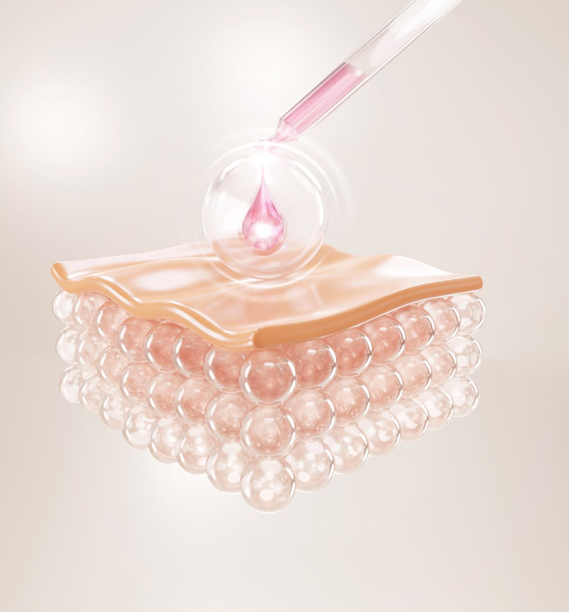
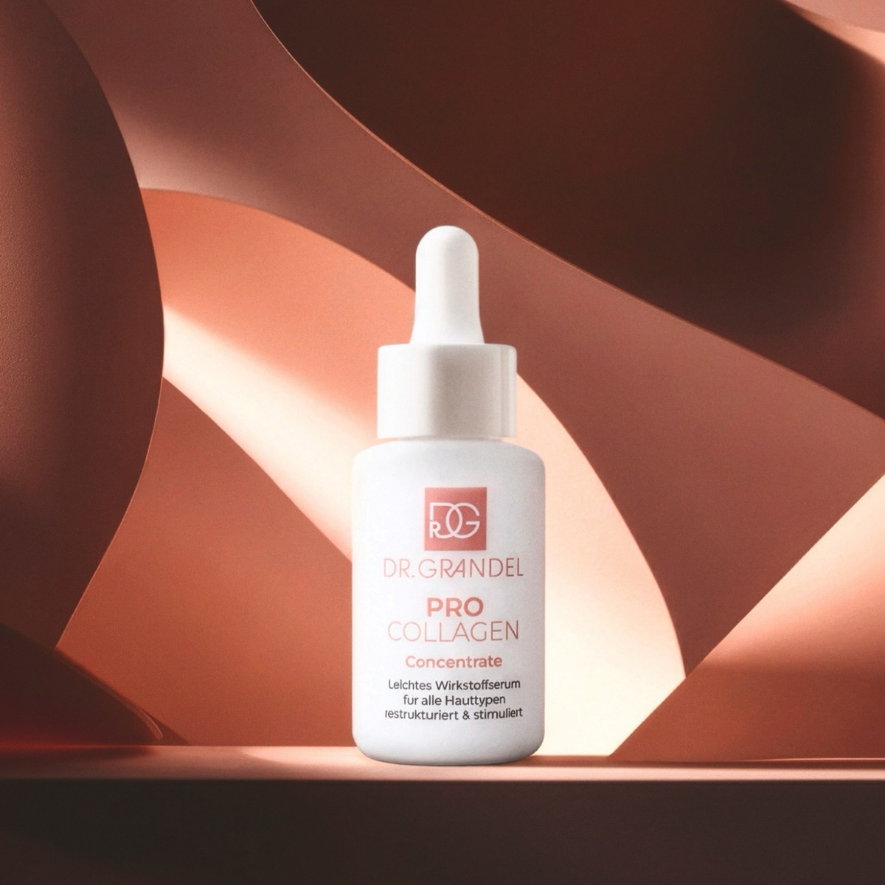
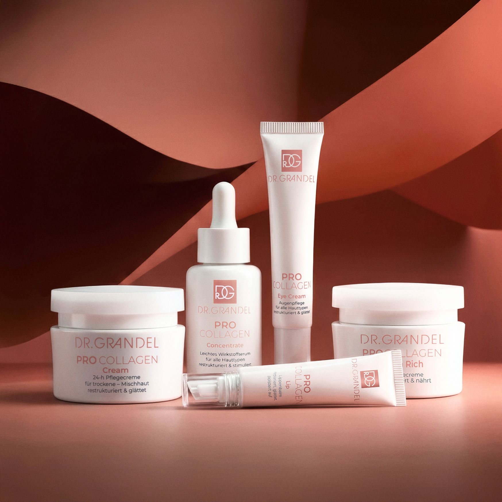
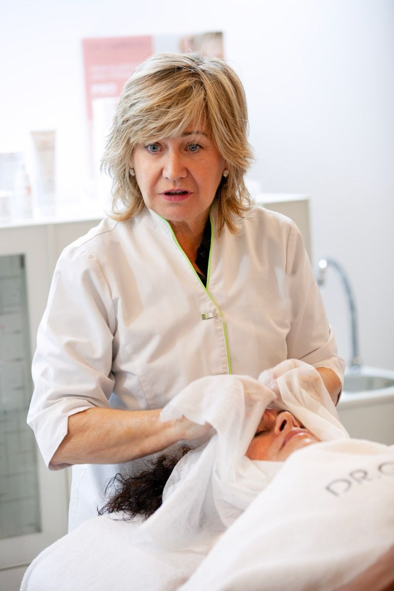
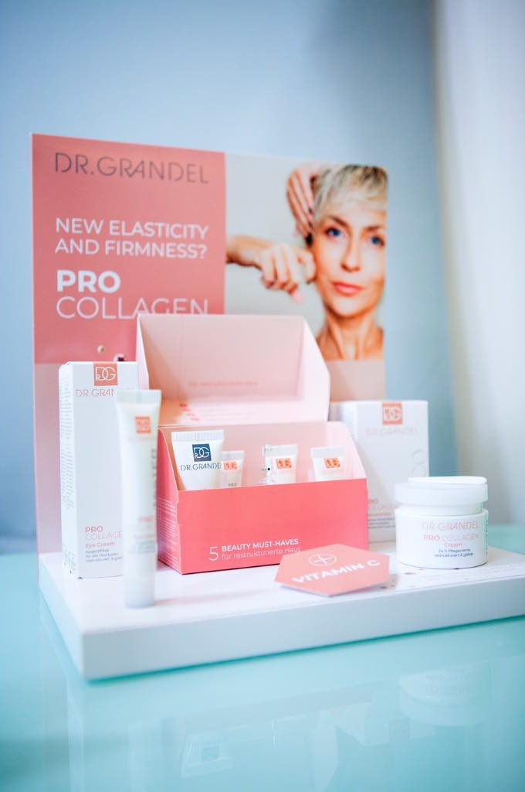
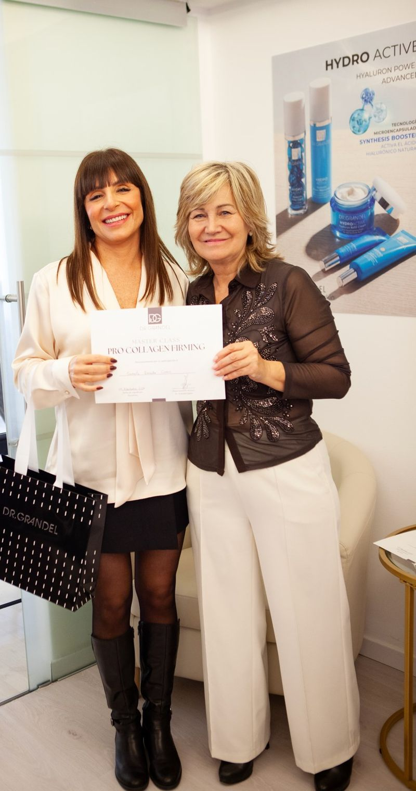

La línea de firmeza de Dr. Grandel no aporta colágeno: hace que la piel vuelva a fabricar el suyo. Un protocolo de cabina de 50 minutos y cinco referencias para casa con resultados medidos. Cuando explicas el mecanismo, la conversación deja de ser de precio.

El colágeno es una molécula demasiado grande para atravesar la piel: aplicado desde fuera se queda en la superficie e hidrata. Pro Collagen trabaja un paso antes. Estimula la síntesis del colágeno propio y frena la degradación del que la piel conserva.
Para la piel que pierde firmeza y densidad: el óvalo que cede, la piel que «no tiene la consistencia de antes», las líneas que ya no se van al descansar.
La piel fabrica menos colágeno. El Amino Silicium Complex y la vitamina C reactivan la síntesis.
Las fibras se degradan antes. Los péptidos pro-colágeno frenan la degradación y estimulan fibras nuevas.
Pseudocolágeno de levadura y Micro Hialurón de bajo peso molecular devuelven un aspecto liso y fresco.
Las zonas finas lo acusan antes. Brightening Peptide Complex en la mirada y Sesam Lipo Filler en el labio.
Test de uso del laboratorio independiente Complife Italia, con 20 participantes durante cuatro semanas. Cada resultado se atribuye solo al producto testado.
Porcentaje de participantes que confirmó cada mejora.
«Las cremas de colágeno ponen colágeno encima de la piel, y ahí se queda. Pro Collagen hace que tu piel vuelva a fabricar el suyo. Por eso no es una crema de colágeno: es un tratamiento de firmeza.»
El corazón es el Amino Silicium Complex: hidroxiprolina, un aminoácido de la propia estructura del colágeno, unida a silicio de alta biodisponibilidad. Afianza las estructuras colágenas e influye sobre la síntesis. Está en todas las referencias, del concentrado al bálsamo labial.
Lo acompañan la vitamina C, que no es un antioxidante de relleno sino el cofactor sin el que la piel no sintetiza colágeno; el pseudocolágeno biotecnológico de levadura, y los péptidos pro-colágeno, que trabajan en las dos direcciones a la vez.
Un protocolo de firmeza de 50 minutos construido alrededor de un gesto: el masaje de modelado reafirmante con el concentrado. Los formatos de cabina son las mismas fórmulas que la clienta se lleva a casa, así que lo que siente en la camilla es exactamente lo que va a usar. Y la pauta domiciliaria sostiene el resultado entre sesiones.

Tras retirar la mascarilla, la piel está limpia y receptiva, y el concentrado que se trabaja con el masaje penetra mejor. Si la sesión se alarga, se recorta la mascarilla, nunca el masaje. Y como Pro Collagen cuenta lo mismo que la aparatología de firmeza (el equipo estimula el colágeno y la línea lo alimenta), encaja sin esfuerzo en la carta de un centro que ya trabaja con ondas de choque, radiofrecuencia o microneedling.
Eye Cream, Concentrate, Cream o Cream Rich según la piel y fotoprotección.
Eye Cream, Concentrate, la crema y Lip como mascarilla.
Ampollas Collagen Boost 2–3 veces por semana durante el programa.
La crema según su piel y la Eye Cream.
El Concentrate, cuando ya ha visto en cabina lo que hace.
El Lip y una cura de Collagen Boost entre programas.
Una crema base, un concentrado que se superpone y los cuidados de zona. Pro Collagen se elige por la firmeza, no por la edad: la clienta de cuarenta que nota que el óvalo empieza a ceder es exactamente su clienta.

No son la misma crema en dos texturas: cada una declara algo distinto.
Normal, seca, mixta y grasa. La crema reestructurante de referencia, con resultados medidos.
Normal a seca. Almendras dulces y karité: la única que declara reducción de arruguitas.
Va debajo de la crema: el concentrado activa y la crema sostiene.
La concentración más alta del método, con péptidos pro-colágeno y Micro Hialurón. Efecto medido a los 30 minutos.
Las dos zonas donde la pérdida de colágeno se ve antes.
Brightening Peptide Complex: arruguitas, ojeras y signos de fatiga. Primer paso de la rutina.
Sesam Lipo Filler y Micro Hialurón: volumen de día y mascarilla labial de noche.

 Una marca sólida detrás
Una marca sólida detrás
Dr. Grandel nace en 1947 en Augsburgo de la mano del químico Dr. Felix Grandel, y hoy es una empresa familiar en tercera generación y una de las marcas de referencia de la cosmética profesional en Alemania.
Investigación, desarrollo, producción y control de calidad propios, en sus laboratorios de Augsburgo. Pionera de las ampollas cosméticas desde 1957 y, desde entonces, una casa que hace de la cosmética de activos una disciplina científica.
Pro Collagen se vende bien cuando el equipo sabe explicar su mecanismo en un minuto. Formamos a tus profesionales en el protocolo y en la prescripción, y seguimos a tu lado después de la primera sesión.
Práctica del Pro Collagen Signature paso a paso, con el masaje de modelado que lo hace diferente.
Las tres preguntas que eligen la referencia correcta y los equívocos que cuestan ventas.
Una guía de consulta escrita para el profesional, no para la clienta, con el consejo que cierra cada venta.
Un interlocutor en España que conoce la línea por dentro y responde cuando lo necesitas.





Jose Antonio y su familia representan a Dr. Grandel en España. No lo hacen desde una oficina: llevan treinta años liderando la estética en Barcelona con Dr. Grandel en sus propias cabinas, hoy en cinco centros propios.
Cada protocolo que te proponemos lo hemos aplicado antes, cada día, con nuestras clientas. Sabemos lo que funciona en cabina y lo que hace que una clienta vuelva, porque es lo que hemos vivido durante tres décadas.
De una familia que hace estética, a los profesionales que la hacen.
 40.000
clientas y clientes han disfrutado de Dr. Grandel
40.000
clientas y clientes han disfrutado de Dr. Grandel
Escríbenos o llámanos. Te contamos cómo trabajar la línea en cabina y en venta, y organizamos la formación de tu equipo.